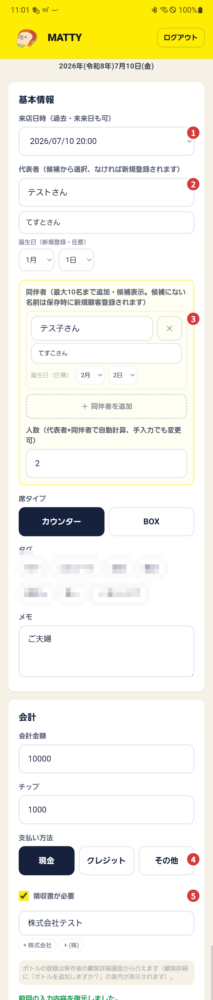
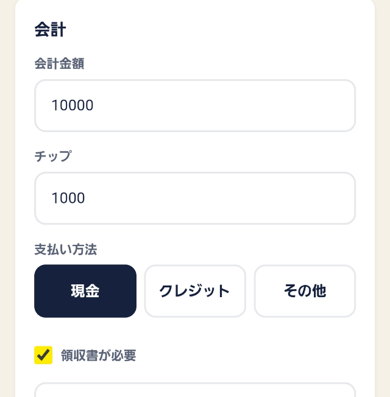

今日はじめて来られたお客様を、その場でサッと登録します。
メニューの 📝 来店 を押します。
これだけで「来店登録」の画面が開きます。

① 来店日時 ② 代表者のお名前（例：テストさん） ③ 同伴者のお名前（例：テス子さん） ④ 支払い方法 ⑤ 領収書が必要ならチェックして記入
候補に出てこなければ、そのまま新しいお客様として登録されます。ふりがな・誕生日は空欄のままでも大丈夫です。あとから直せます。席タイプはあてはまるボタンを押すだけです。
＋ 同伴者を追加 を押すと、入力欄が増えます。
今回はテス子さんも一緒なので、ここにテス子さんのお名前を入れます。分からない項目は空欄でOKです。
画面を下にすすめると「会計」の欄があります。次の内容を入れてみましょう。

「支払い方法」は、あてはまるボタンを押すだけです。
最後に 保存 を押せば完了です。
続けて次のお客様も登録したいときは、代わりに 保存して続ける を押すと、入力欄が空になってすぐ次の入力ができます。